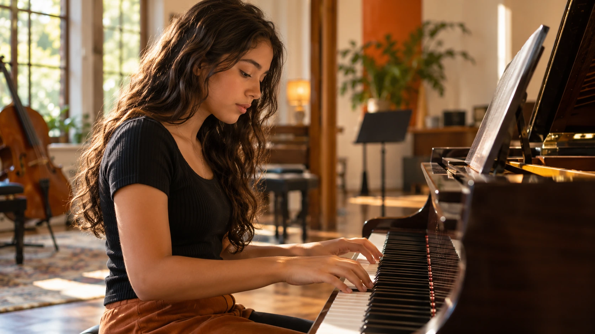
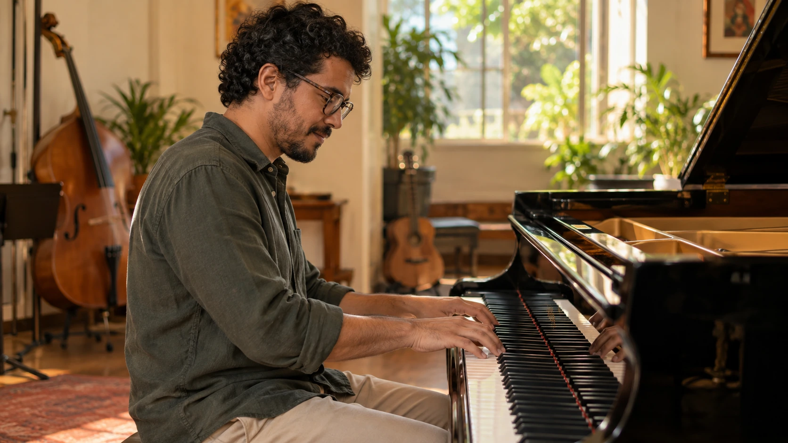

CRIANÇASDescobrir. Criar.
Descobrir. Criar.
Aprender brincando.
A música como uma descoberta leve e estimulante.

Não importa a idade, o instrumento ou se você nunca tocou antes. Aqui, você encontra espaço para aprender, experimentar e fazer música do seu jeito.
Conheça a GamaSempre quis aprender um instrumento? Quer retomar algo que deixou para trás? Ou procura um lugar onde seu filho possa descobrir a música de forma leve e estimulante?
Aqui, cada aluno encontra seu próprio ritmo.
Conheça a Gama
Temos cursos para diferentes idades,
objetivos e momentos.

Na Gama, aprender música não é correr atrás de uma prova. É construir uma relação com algo que pode acompanhar você pela vida inteira.
A música como uma descoberta leve e estimulante.

Espaço para explorar, experimentar e se expressar.

Nem para retomar aquela vontade de fazer música.
Simples, sem complicação.
A gente acompanha você desde o primeiro contato.
Conte pra gente qual instrumento desperta sua curiosidade.
Conheça a escola, o professor e a dinâmica das aulas.
Construímos o aprendizado respeitando seu ritmo e seus objetivos.
Retratos ilustrativos do projeto. Nomes e apresentações da equipe serão adicionados em breve.
Novos começos, descobertas e música compartilhada.
Ver avaliações no GoogleEspaço reservado para um depoimento real de aluno ou responsável.
Relato a adicionarEspaço reservado para um depoimento real de aluno ou responsável.
Relato a adicionarEspaço reservado para um depoimento real de aluno ou responsável.
Relato a adicionarNão. Você pode começar do zero ou retomar um instrumento. A equipe conversa com você sobre seus objetivos e seu momento.
Piano, violão, guitarra, canto, bateria e teclado. Fale com a Gama para conhecer a disponibilidade de cada curso.
Clique em “Agendar uma aula”, escolha seu interesse e envie a mensagem pelo WhatsApp. A equipe confirma os detalhes e a disponibilidade com você.
Na Rua Uberaba, 57, Grajaú, Rio de Janeiro/RJ. Na seção de contato você encontra o mapa e o link para traçar sua rota.